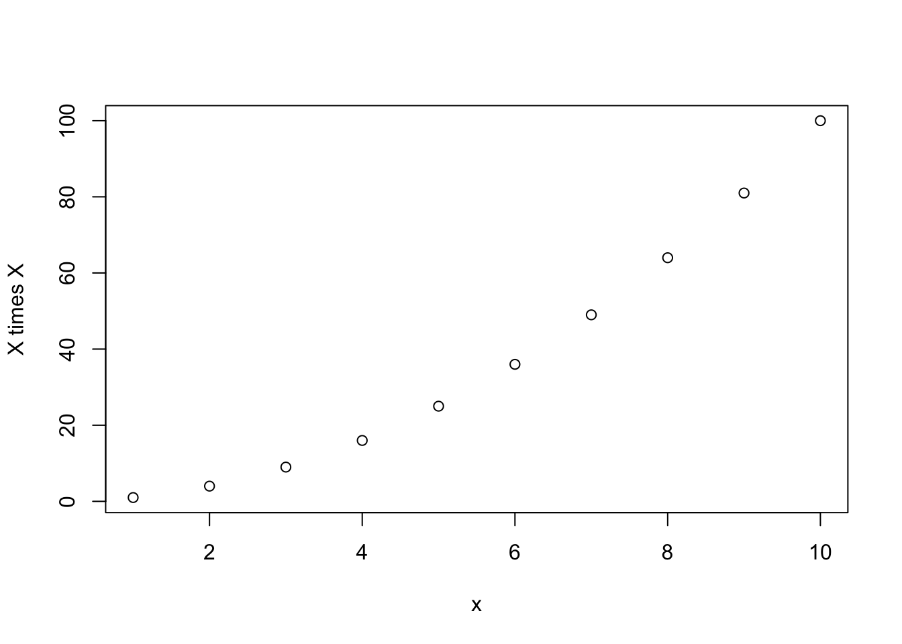
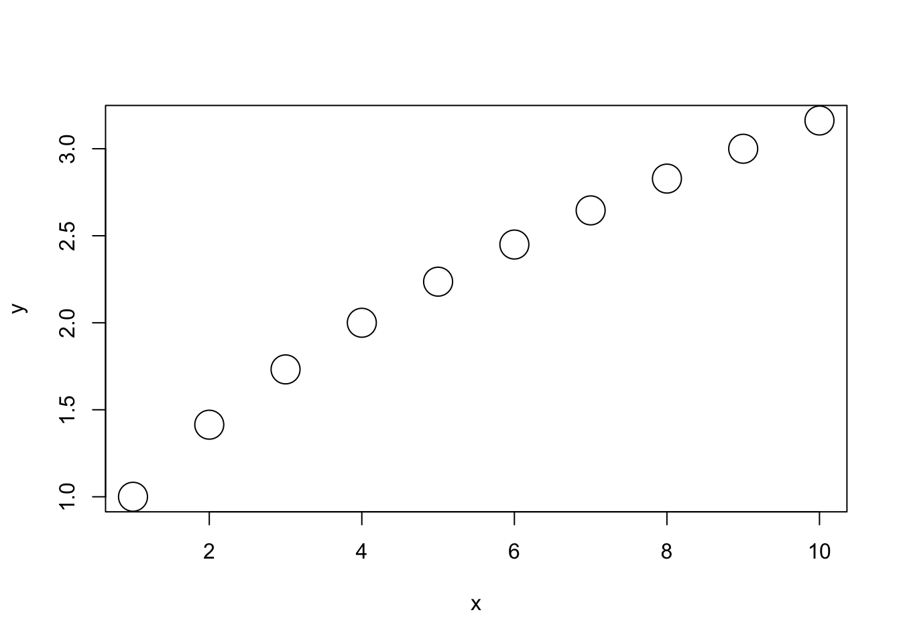

my_function_name <- function( argument ) statementLearning objectives
Learning objectives
At the end of this lesson you will:
- Understand the components of a function
- Be able to write your own functions
- Understand the scope of variables within functions
- Understand methods dispatch
- Have a better understanding of how packages work
Overview
We’ve learned how to write good scripts and debug at the console. You may have noticed that you sometimes have to do the same things over and over again. And you find yourself cutting and pasting bits of code and making minor changes to it. This is a situation where writing your own function is a big help.
Functions help in several ways. Once you perfect a bit of code, they help achieve these goals of good programming by writing code that is:
- Reusable and Generic
- Modular
- Easy to Maintain
When do you want to write a function? Any time you find yourself cutting and pasting bits of your code (more than once or twice). Think ahead to making your function reusable.
Functions are wrappers for code that you want to reuse
Functions are just bits of code that you want to reuse. You can even build up your own function library in a script like myfunctions.R which you can source with every script you write. So in this way, you can save yourself a lot of trouble by designing and maintaining a tight function library.
A function is very easy to define. You need a name for your function, some arguments (the input), a valid R statement (i.e., some code to run), and output to return. You then put it together in this following format:
The only things that are actually required are the name of your function, and the word function followed by parentheses. Arguments are optional (well so are the statements, but what would be the point of that?).
Here is a very simple function to calculate the square of a value:
mysq <- function( x ) { # function name is mysq
x*x # the function will return the square of x
}Once you run the function definition through the console, your function will be stored in RAM. Then you can then use your function in the normal way that you use functions:
mysq(2)[1] 4You can have multiple lines of R code to run, and you can even have functions within functions.The output from the function (the return value) is the last value computed. It is often best practice to explicitly use the return function as in the code below.
mysq <- function( x ) {
plot( x, x*x, ylab="Square of x") # plot x and x*x on the y axis
return (x*x) # return the square of x
}
mysq(1:10) 
[1] 1 4 9 16 25 36 49 64 81 100Arguments
Generally speaking, arguments are included in functions because you might want to change them. Things that stay the same are usually hard-coded into the function. But what if you want to change it sometimes but not others?In our little example, what if you wanted to be able to change the label on the y-axis sometimes, but most of the time you wanted it to just say “Square of x”?
mysq <- function( x, yylab="Square of x" ) { # default argument for the y-label
plot( x, x*x, ylab=yylab)
return (x*x)
}
mysq(1:10, yylab="X times X") 
[1] 1 4 9 16 25 36 49 64 81 100What happens if you just run the following:
mysq(1:10)
[1] 1 4 9 16 25 36 49 64 81 100These arguments with default values are therefore optional. Because they will run just fine even if you don’t put anything for them. Whenever I write functions, I try to make as many default arguments as I can so that I can run them with minimal brain power. When you look at it 6 months later, you don’t want to have to reconstruct why you wrote it in the first place just to make it go.
Another cute trick is that if you don’t want to have anything as your default value, but you still want to have the option to change it, set the default to NULL.
mysq <- function( x, yylab=NULL) { # default arg is no value for the y-label,
plot( x, x*x, ylab=yylab) # but you can specify it if you want to.
return (x*x)
}
mysq(1:10, yylab="X times X") 
[1] 1 4 9 16 25 36 49 64 81 100Order of arguments
You may have noticed that you can run a function with or without naming the arguments. For example (here I have supressed printing the figure in quarto):
mysq(2)[1] 4mysq(x=2)[1] 4work just the same.
The reason is that R will assume that if you don’t name the arguments, they are in the same order as in the function definition. Therefore,
mysq( c(1, 3, 5, 7), "Squares of prime numbers")[1] 1 9 25 49mysq( yylab = "Squares of prime numbers", x=c(1, 3, 5, 7))[1] 1 9 25 49Are the same. Another way to put this, if you don’t want to worry about the order that the arguments are defined in, always use the names=.
Arbitrary numbers of arguments
R is very flexible with its arguments. You can also have an arbitrary number of arguments by adding ... This is often used to pass additional arguments to plot(), such as below:
myfun <- function(x, y, ...) {
plot(x, y, ...)
}
# optional args color and line plot are passed to plot()
myfun( 1:10, sqrt(1:10), col="red", type="l") 
Note: We did not create arguments for color or type in myfun, but these are arguments for plot, so the ... in the function definition is like the expandable suitcase that allows us to pass anything through. This is for the plot() function, which has many optional arguments, but it can be used for anything.
myfun( 1:10, sqrt(1:10), cex=3) # optional arg for point size passed to plot()
Another common place where variable numbers of arguments comes up is in database queries, where you may want to run a search on a number of terms.
query <- function( ... ) {
paste( ... )
}
query( "cat", "dog", "rabbit") [1] "cat dog rabbit"Or any situation where you are just not sure how many inputs you will have. For example, you could have a list builder (this is a real function! no joke):
addlist <- function( ... ) {
list( ... )
}
metadat <- addlist ( dataset = "myeco", date="Jan 20, 2023")
metadat$dataset
[1] "myeco"
$date
[1] "Jan 20, 2023"dat <- addlist (ind=1:10, names=letters[1:10], eco=rnorm(10) )
dat$ind
[1] 1 2 3 4 5 6 7 8 9 10
$names
[1] "a" "b" "c" "d" "e" "f" "g" "h" "i" "j"
$eco
[1] -0.9572213 -0.3388834 -0.9815275 1.5341439 -0.3236124 -2.0562527
[7] -0.5141652 -0.8511749 -0.3397510 -0.5002090This may seem like a silly example (and it is), but it is kept simple so you can see what’s going on. These default arguments are very useful for making your functions flexible so that they can be more generic and reusable for many purposes.
Return value
As you have seen in the examples, R will return the last value computed (by default) or whatever you specify in the return() function. One thing that is a little peculiar to R is that you can only return one and only one object. So what do you do if you have several pieces of information you want returned? Use a list:
mysq <- function( x, yylab="Square of x" ) { # default argument for the y-label
plot( x, x*x, ylab=yylab)
output <- list( input=x, output=x*x )
return (output)
}This is in fact what many model-fitting packages do. They return a list with the inputs, any fitted parameters, and model fit statistics, as well as characteristics of the objects such as names and factor levels, etc.
Looking inside R: functions that are inside packages
If you want to look at how any particular function in R is written – you can! R is open-source. You just type the name of the function with no parentheses:
summaryfunction (object, ...)
UseMethod("summary")
<bytecode: 0x7fefc0814670>
<environment: namespace:base>You can see that it is a generic function, and that it uses different methods depending on the class of the object.
Here are all the methods that are defined for summary:
methods('summary') [1] summary.aov summary.aovlist*
[3] summary.aspell* summary.check_packages_in_dir*
[5] summary.connection summary.data.frame
[7] summary.Date summary.default
[9] summary.ecdf* summary.factor
[11] summary.glm summary.infl*
[13] summary.lm summary.loess*
[15] summary.manova summary.matrix
[17] summary.mlm* summary.nls*
[19] summary.packageStatus* summary.POSIXct
[21] summary.POSIXlt summary.ppr*
[23] summary.prcomp* summary.princomp*
[25] summary.proc_time summary.rlang_error*
[27] summary.rlang_message* summary.rlang_trace*
[29] summary.rlang_warning* summary.rlang:::list_of_conditions*
[31] summary.srcfile summary.srcref
[33] summary.stepfun summary.stl*
[35] summary.table summary.tukeysmooth*
[37] summary.vctrs_sclr* summary.vctrs_vctr*
[39] summary.warnings
see '?methods' for accessing help and source codeHere’s how we find out what’s inside summary.factor for example:
summary.factorfunction (object, maxsum = 100L, ...)
{
nas <- is.na(object)
ll <- levels(object)
if (ana <- any(nas))
maxsum <- maxsum - 1L
tbl <- table(object)
tt <- c(tbl)
names(tt) <- dimnames(tbl)[[1L]]
if (length(ll) > maxsum) {
drop <- maxsum:length(ll)
o <- sort.list(tt, decreasing = TRUE)
tt <- c(tt[o[-drop]], `(Other)` = sum(tt[o[drop]]))
}
if (ana)
c(tt, `NA's` = sum(nas))
else tt
}
<bytecode: 0x7fefba4bf1d0>
<environment: namespace:base>Note: Internal functions are hidden inside the namespace of a package – the programmer has chosen to not make it available to the global environment. To find these, use getAnywhere('functionname') ha!
Scope
It is important to know that when you write a function, everything that happens inside the function is local in scope. It’s like a big family secret –
everything that is said in the family stays in the family.
If you try to go talking about it to the outside world, no one will know what you are talking about. For example, suppose you wrote a function with some internal variables like this:
myfunc <- function( fattony, littlejimmy) {
canolis <- fattony*2 + littlejimmy
return(canolis)
}
myfunc( 5, 4 )[1] 14If we try type the following on the command line, we will get an error ... object 'canolis' not found.
canolisEven though you ran the function, you can’t ask R how many canolis you need because what’s created in the function stays in the function. When the function is over, poof! It’s gone. That’s because the objects used within the function are local in scope and not available to the global environment.
Of course, global variables are available to use inside of functions, just as family members are aware of what’s going on in the outside world. So for example, it is perfectly valid to use pi or anything you’ve defined previously in the global environment inside a function:
myfunc <- function( fattony, littlejimmy) {
canolis <- fattony*pi + littlejimmy+littlebit
return( round(canolis) )
}
littlebit <- 1
myfunc( 5, 4 )[1] 21The code above worked because littlebit was defined prior to running our function. But you can see that it’s often a good idea to actually pass into a function anything that is needed to make it go.
So you may be wondering why it works this way? Well in general, in most advanced programming languages,
the objects within functions are local in scope. This is to make it easier to program.
If there is a clean separation between what goes on inside a function and what is outside of it, then you can write functions without worrying about every possibility regarding what could happen. You only have to worry about what is happening inside your little function. That’s what helps to make it modular and extensible – so your functions can play nice with other codes.
Search Paths and Environment
Remember what we were saying about functions in R are objects? So if we look at our workspace, our functions should be there:
ls()[1] "addlist" "dat" "littlebit" "metadat" "myfun" "myfunc"
[7] "mysq" "query" And sure enough they are! As well as all of our data frames, lists, and other objects that we created. Now I should note that it is possible to write a function in R with the same name as a built-in function in R. For example, if for some crazy reason, we wanted to redefine the mean function, we can!
mean <- function(...) {
return ("dirty harry")
}
mean( 1:10 )[1] "dirty harry"What happened? Well we wrote our own function for mean. Why is R only returning our new function, an not the built-in one?
Well, any object that we create (including our own functions) are in the Global Environment.
Whereas functions in packages are in their further down the search path. R knows where things are by the order that they are attached. The global environment is first (containing any user-created objects), followed by attached packages:
search() [1] ".GlobalEnv" "tools:quarto" "tools:quarto"
[4] "package:stats" "package:graphics" "package:grDevices"
[7] "package:utils" "package:datasets" "package:methods"
[10] "Autoloads" "package:base" The function mean() is in the base package, which is all the way at the end. So when we type mean() R will first look to see if there is any function by that name in our global environment, then in any of the other attached packages before finally finding it in base. Needless to say, it’s very confusing (and potentially dangerous!) to name objects by the same name as R key words or built-in functions. Don’t do it!
If you need to get rid of the custom build mean function, just type rm(mean) at the console.
rm(mean)
mean(1:10)[1] 5.5Whew! Or just shut down and restart R. It’s a clean slate after that! (Don’t worry, you can’t break R ;).
Exercises
- Write your own function for calculating a mean of a vector, using only the
sum()and thelength()functions. The input should be a vector, and the output is the mean. - Write your own function for calculating the standard error. You can use the
sd(),sqrt(), and thelength()functions. The input should be a vector of values. - Go back to some of the class data Iʻve given you. Write a function that will read in the irradiance data, trim it to wavelengths between 300 and 750 nm, and plot the data. Then use that function to read in files for the different directions:
up,for(forward),left, andright:20070725\_01upirr.txt,20070725\_01forirr.txt,20070725\_01leftirr.txt,20070725\_01rightirr.txt. Your function should take as input just the file name. Write a script that defines the function and then calls the function four times, once for each file. - Now take the function you just made, and add optional arguments for the cut off values 300 and 750. You may want to trim the data to different values. Try trimming it to different values and see what happens using your new function.